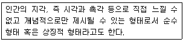
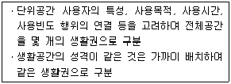
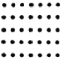
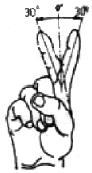
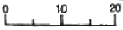
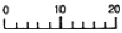
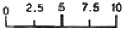
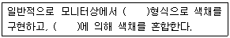

실내건축산업기사 (2009-03-01 기출문제)
1과목: 실내디자인론
1. 다음 중 조명기구 자체가 하나의 예술품과 같이 강조되거나 분위기를 살려주는 역할을 하는 장식조명에 속하지 않는 것은?
- 펜던트
- 캐스케이드
- 샹들리에
- 브라켓
(정답률: 65%)

2. 다음 중 렌더링(rendering)의 의미로 가장 알맞은 것은?
- 아이디어 스케치
- 설계도
- 완성예상도
- 연구모형
(정답률: 70%)
3. 실내공간을 구성하는 주요 기본구성요소에 대한 설명 중 옳지 않은 것은?
- 벽은 공간을 에워싸는 수직적 요소로 수평방향을 차단하여 공간을 형성한다.
- 바닥은 신체와 직접 접촉하기에 촉각적으로 만족할 수 있는 조건을 요구한다.
- 천장은 외부로부터 추위와 습기를 차단하고 사람과 물건을 지지하여 생활장소를 지탱하게 해준다.
- 기둥은 선형의 수직요소로 크기, 형상을 가지고 있으며 구조적 요소로 사용되거나 또는 강조적 상징적 요소로 사용된다.
(정답률: 72%)
4. 주거공간을 개인공간, 작업공간, 사회적 공간으로 구분할 경우, 다음 중 개인공간에 대한 설명으로 옳지 않은 것은?
- 개인의 기호, 취미나 개성이 나타나도록 계획한다.
- 침실, 주방, 서재, 공부방 등을 말한다.
- 프라이버시(privacy)가 존중되어져야 한다.
- 욕실, 화장실, 세면실 등의 생리위생공간도 개인공간에 해당된다.
(정답률: 66%)
5. 다음의 디자인 요소에 관한 설명 중 옳지 않은 것은?
- 질감은 촉각 또는 시각으로 지각할 수 있는 어떤 물체 표면상의 특징을 말한다.
- 공간은 항상 보는 자와 일정한 관계를 갖는다.
- 선은 면 위에 있을 때는 폭이 있고, 공간 내에 있을 때는 굵기가 있다.
- 면은 길이와 깊이가 있다.
(정답률: 45%)
6. 소비자 구매심리 5단계의 순서로 옳은 것은?
- 주의(A)-흥미(I)-욕망(D)-확신(C)-구매(A)
- 흥미(I)-주의(A)-욕망(D)-확신(C)-구매(A)
- 확신(C)-욕망(D)-흥미(I)-주의(A)-구매(A)
- 욕망(D)-흥미(I)-주의(A)-확신(C)-구매(A)
(정답률: 71%)
7. 형태를 의미구조에 의해 분류하였을 때, 다음 설명에 해당하는 것은?

- 현실적 형태
- 인위적 형태
- 이념적 형태
- 추상적 형태
(정답률: 71%)
8. 어떤 공간에 규칙성의 흐름을 주어 경쾌하고 활기 있는 표정을 주고자 한다. 다음의 디자인 원리 중 가장 관계가 깊은 것은?
- 조화
- 리듬
- 강조
- 통일
(정답률: 74%)
9. 일광의 조절 장치에 속하지 않는 것은?
- 커튼
- 브라인드
- 루버
- 코니스
(정답률: 55%)
10. 가구배치계획에 대한 설명으로 옳지 않은 것은?
- 실의 사용목적과 행위에 적합한 가구배치를 한다.
- 가구사용시 불편하지 않도록 충분한 여유공간을 두도록 한다.
- 평면도에 계획되며 입면계획을 고려하지 않는다.
- 가구의 크기 및 형상은 전체공간의 스케일과 시각적, 심리적 균형을 이루도록 한다.
(정답률: 86%)
11. 규모 및 치수계획에 대한 설명으로 옳지 않은 것은?
- 동작영역의 크기는 인체치수를 기본으로 결정되며 동적인 인체치수가 곧 동작치수이다.
- 규모 및 치수계획의 궁극적 목표는 물품, 공간 또는 세부부분에 필요한 적정치수를 결정하기 위함이다.
- 적정치수의 결정 방법 중 목표치±α 방법은 설계자나 사용자의 판단으로 어느 목표치를 설정하고 그 효과를 타진하면서 치수를 조정하는 방법이다.
- 천장고는 인체치수를 고려한 절대적인 치수로 취급되어야 한다.
(정답률: 62%)
12. 다음 중 퀸베드의 치수로 가장 적절한 것은?
- 1000 × 2000 mm
- 1350 × 2000 mm
- 1500 × 2000 mm
- 2000 × 2000 mm
(정답률: 80%)
13. 황금비례에 관한 설명으로 옳은 것은?
- 고대로마인들이 창안하였다.
- 기하학적 분할방식이다.
- 건축에만 적용되었다.
- 1 : 3.14의 비율이다.
(정답률: 61%)
14. 다음의 실내디자인의 제반 기본조건 중 가장 먼저 고려되어야 하는 것은?
- 정서적 조건
- 기능적 조건
- 심미적 조건
- 환경적 조건
(정답률: 69%)
15. 실내디자인 요소 중 점에 대한 설명으로 옳지 않은 것은?
- 점이 많은 경우에는 선이나 면으로 지각된다.
- 동일한 크기의 점인 경우 밝은 점은 작고 좁게, 어두운 점은 크고 넓게 지각된다.
- 공간에 하나의 점이 놓여지면 주의력이 집중되는 효과가 있다.
- 점의 연속이 점진적으로 축소 또는 팽창 나열되면 원근감이 생긴다.
(정답률: 77%)
16. 실내디자인 과정 중 다음 설명이 나타내는 것은?

- 동선계획
- 죠닝계획
- 치수계획
- 가구계획
(정답률: 77%)
17. 다음의 주택의 실구성 형식에 대한 설명 중 옳지 않은 것은?
- DK형은 이상적인 식사공간 분위기 조성이 비교적 어렵다.
- LD형은 식사도중 거실의 고유 기능과의 분리가 어렵다.
- LDK형은 공간을 효율적으로 활용할 수 있어서 소규모 주택에 주로 이용된다.
- LDK형은 거실, 식당, 부엌 각 실의 독립적인 안정성 확보에 유리하다.
(정답률: 77%)
18. 균형의 유형 중 방사형 균형을 의미하는 것은?
- 중심선을 갖고 바깥쪽으로 확장되도록 배열
- 중심에 거울이 놓여 있듯이 형태가 양분되도록 배열
- 시각적 배열이나 중량감이 동일하지 않으나 상호 작용에 의한 배열
- 동등한 영상은 갖지 않으나 큰 물체와 작은 그룹과의 안정된 배열
(정답률: 65%)
19. 실내계획에 있어 모듈(Module)시스템의 효과로 옳지 않은 것은?
- 재료절감과 경제적 시공
- 시공기간의 연장
- 대량생산의 가능
- 설계작업의 단순화
(정답률: 76%)
20. 다음 중 부엌의 작업순서에 따른 작업대의 배열순서로 가장 적당한 것은?
- 개수대-조리대-준비대-가열대-배선대
- 준비대-조리대-배선대-개수대-가열대
- 개수대-준비대-조리대-가열대-배선대
- 준비대-개수대-조리대-가열대-배선대
(정답률: 67%)
2과목: 색채 및 인간공학
21. 음원으로부터의 직접음과 벽체 등에서 반사된 소리가 그 시간차 때문에 한 소리가 둘 이상으로 들리는 현상을 무엇이라 하는가?
- 회절
- 공명
- 반향
- 굴절
(정답률: 38%)
22. 동일한 무게의 짐을 나르는 경우 에너지소비량이 가장 큰것은?
- 등에 진다.
- 양손에 든다.
- 어깨에 둘러멘다.
- 머리에 올려 놓는다.
(정답률: 80%)
23. 다음 그림은 게스탈트(gestalt)의 법칙 중 무엇에 해당하는가?

- 접근성
- 단순성
- 연속성
- 폐쇄성
(정답률: 59%)
24. 다음 그림과 같이 검지를 움직일 때 가동역을 표현한 것으로 옳은 것은?

- 굴곡과 신전
- 내선과 외선
- 상향과 하향
- 내전과 외전
(정답률: 67%)
25. 다음 중 눈금을 나누는 방법으로 적절하지 않은 것은?



(정답률: 64%)
26. 시각적 표시장치에서 보도 표지판의 걷는 사람과 같이 사물이나 행동을 단순하고 정확하게 나타낸 것을 무엇이라 하는가?
- 묘사적 부호
- 추상적 부호
- 임의적 부호
- 식별적 부호
(정답률: 65%)
27. 자극이 중지된 후에도 잠시 동안 자극 표현을 지속하는 임시 저장 메커니즘이 있는 것과 관련된 것은?
- 인식(recognition)
- 감각보관(sensory storage)
- 작업기억(working memory)
- 학습연상(scholarship association)
(정답률: 72%)
28. 다음 중 음압수준(sound pressure level)을 산출하는 식으로 옳은 것은? (단, P0 는 기준음압, P1은 주어진 음압을 의미한다.)
- dB 수준 = 10 log(P1/P0)
- dB 수준 = 20 log(P1/P0)
- dB 수준 = 10 log(P1/P0)3
- dB 수준 = 20 log(P1/P0)3
(정답률: 45%)
29. 다음 중 동작경계의 원칙(principles of motion economy)과 관계 없는 것은?
- 공구의 기능을 결합하여 사용한다.
- 두 팔을 서로 반대 방향으로 움직인다.
- 최대의 동선을 확보한다.
- 휴식시간을 제외하고는 양 손이 동시에 쉬지 않도록 한다.
(정답률: 34%)
30. 다음 중 고온 환경에 대한 신체의 영향이 아닌 것은?
- 근육의 이완
- 체표면의 증가
- 수분 및 염분의 감소
- 화학적 대사작용의 증가
(정답률: 46%)
31. 다음중 보색대비의 효과가 가장 크게 나타나는 배색은?
- 빨강, 청록
- 빨강, 노랑
- 빨강, 검정
- 빨강, 보라
(정답률: 65%)
32. 배경색과의 관계로 이루어지는 명시도를 높이는 결정적인 조건은?
- 색상차
- 명도차
- 채도차
- 대비차
(정답률: 58%)
33. KS A 0011 유채색의 수식형용사에 의한 다음 색 중 가장 채도가 높은 색은?
- 연한 연두
- 진한 연두
- 밝은 연두
- 선명한 연두
(정답률: 57%)
34. 색입체에 관한 내용으로 잘못된 것은?
- 색의 3속성을 3차원 공간에 계통적으로 표현한 것이다.
- 명도는 위로 갈수록 높아진다.
- 채도는 중심에서 멀어질수록 낮아진다.
- 색상은 스펙트럼 순으로 둥글게 배열하였다.
(정답률: 54%)
35. 다음 중 빛이 생성되는 방식이 아닌 것은?
- 흑체복사
- 형광
- 백열광
- 파장
(정답률: 42%)
36. 노란색 종이를 태양빛에서 보나 형광등에서 보나 같은 노란색으로 느끼게 될 때. 이는 눈의 어떤 순응 상태를 말하는가?
- 명순응
- 암순응
- 색순응
- 무채순응
(정답률: 68%)
37. 오스트발트는 색상과 명도 단계를 몇 등분하여 등색상 삼각형이 되게 하고 이를 기본으로 색체조화의 이론을 발표하였는가?
- 24색상, 명도 10단계
- 24색상, 명도 8단계
- 20색상, 명도 7단계
- 20색상, 명도 5단계
(정답률: 40%)
38. 색채의 온도감에 대한 설명 중 틀린 것은?
- 색의 세가지 속성 중에서 주로 채도에 영향을 받는다.
- 무채색에서 고명도보다 저명도의 색이 따뜻하게 느껴진다.
- 장파장쪽의 색이 따뜻하고, 단파장쪽의 색이 차갑게 느껴진다.
- 흑색이 흰색보다 따뜻하게 느껴진다.
(정답률: 27%)
39. 기업의 브랜드 아이덴티티를 높이기 위해 사용되는 색 중 가장 사용빈도가 높은 색에 대한 설명으로 맞는 것은?
- 회색으로 고난, 의지, 암흑을 상징한다.
- 보라색으로 여성적인 이미지와 부를 상징한다.
- 파란색으로 미래지향, 전진, 젊음을 상징한다.
- 노란색으로 도전과 화합, 국제적인 감각을 상징한다.
(정답률: 66%)
40. ( ) 안에 들어갈 용어를 순서대로 짝지은 것은?

- RGB - 가법혼색
- CMY - 가법혼색
- Lab - 감법혼색
- CMY - 감법혼색
(정답률: 68%)
3과목: 건축재료
41. 원목을 일정한 길이로 절단하여 이것을 회전시키면서 연속적으로 얇게 벗긴 것으로 원목의 낭비를 막을 수 있는 합판 제조법은?
- 슬라이스드 베니어
- 소드 베니어
- 로터리 베니어
- 반원 슬라이스드 베니어
(정답률: 71%)
42. 색을 칠하여 무늬나 그림을 나타낸 판유리로서 교회의 창, 천장 등에 많이 쓰이는 유리는?
- 스테인드글라스(stained glass)
- 프리즘유리(prism glass)
- 유리블록(glass block)
- 복층유리(pair glass)
(정답률: 63%)
43. 금속 가공제품에 관한 다음 설명 중 옳은 것은?
- 조이너는 얇은 판에 여러 가지 모양으로 도려낸 철물로서 환기구, 라디에이터 커버 등에 이용된다.
- 펀칭메탈은 계단의 디딤판 끝에 대어 오르내릴 때 미끄러지지 않게 하는 철물이다.
- 코너비드는 벽ㆍ기둥 등의 모서리부분의 미장바름을 보호하기 위하여 사용한다.
- 논슬립은 천장ㆍ벽 등에 보드류를 붙이고 그 이음새를 감추고 누르는 데 쓰이는 것이다.
(정답률: 57%)
44. 보통포틀랜드 시멘트의 품질규정 (KS L 5201)에서 비카시험의 초결시간과 종결시간으로 옳은 것은?
- 30분 이상 - 6시간 이하
- 60분 이상 - 6시간 이하
- 60분 이상 - 10시간 이하
- 2시간 이상 - 10시간 이하
(정답률: 57%)
45. 다음 중 목재의 강도에 관한 설명으로 옳지 않은 것은?
- 비중이 크면 압축강도도 크다.
- 목재의 휨강도는 전단강도보다 크다.
- 목재의 함수율이 크면 클수록 압축강도는 증가한다.
- 가력방향이 섬유방향에 평행할 경우가 직각방향일 경우보다 목재의 인장강도가 더 크다.
(정답률: 68%)
46. 다음 중 목재에 관한 설명으로 옳지 않은 것은?
- 춘재부는 세포막이 얇고 연하나 추재부는 세포막이 두껍고 치밀하다.
- 심재는 목질부 중 수심 부근에 위치하고 일반적으로 변재보다 강도가 크다.
- 널결은 곧은결에 비해 일반적으로 외관이 아름답고 수축변형이 적다.
- 4계절 중 벌목의 가장 적당한 시기는 겨울이다.
(정답률: 52%)
47. 석기질이며 비교적 다른 타일에 비해 두께가 두껍고 홈줄을 넣은 외부 바닥용의 특수타일은?
- 스크래치 타일(scratch tile)
- 모자이크 타일(mosaic tile)
- 보더 타일(border tile)
- 클링커 타일(clinker tile)
(정답률: 41%)
48. 콘크리트에 사용되는 혼화제 중 AE제의 특징이 아닌 것은?
- 워커빌리티를 개선시킨다.
- 블리딩을 감소시킨다.
- 마모에 대한 저항성을 증대시킨다.
- 압축강도를 증가시킨다.
(정답률: 34%)
49. 열가소성수지로서 두께가 얇은 시트를 만들어 건축용 방수재료로 이용되며 내화학성의 파이프로도 활용되는 것은?
- 폴리스티렌수지
- 폴리에틸렌수지
- 폴리우레탄수지
- 요소수지
(정답률: 57%)
50. 강의 열처리란 금속재료에 필요한 성질을 주기 위하여 가열 또는 냉각하는 조작을 말하는데 다음 중 강의 열처리 방법에 해당하지 않는 것은?
- 늘림
- 불림
- 풀림
- 뜨임질
(정답률: 39%)
51. 천연수지 합성수지 또는 역청질 등을 건섬유와 같이 열반응시켜 건조제를 넣고 용제에 녹인 것은?
- 유성페인트
- 래커
- 바니쉬
- 에나멜 페인트
(정답률: 45%)
52. 내화벽돌은 최소 얼마 이상의 내화도를 가져야 하는가?
- SK 10 이상
- SK 15 이상
- SK 21 이상
- SK 26 이상
(정답률: 59%)
53. 폴리에스테르수지에 관한 설명 중 옳지 않은 것은?
- 전기절연성이 우수하다.
- 도료, 파이프 등에 사용된다.
- 건축용으로는 판상제품으로 주로 사용된다.
- 불포화 폴리에스테르수지는 열가소성 수지이다.
(정답률: 40%)
54. 미장재료 중 돌로마이트 플라스터에 관한 설명으로 옳지 않은 것은?
- 공기 중의 탄산가스와 결합하여 경화한다.
- 미장 후 6 ~ 12개월은 알칼리성으로 유성페인트마 감을 할 수 없다.
- 원칙적으로 풀 또는 여물을 사용하지 않고 물로 연화하여 사용한다.
- 분말도가 미세한 것이 시공이 어렵고 균열의 발생도 크다.
(정답률: 44%)
55. 다음 중 수경성 미장재료로만 묶어 놓은 것은?
- 시멘트 모르타르, 테라조바름
- 테라조바름, 회반죽
- 시멘트 모르타르, 회반죽
- 석고 플라스터, 진흙
(정답률: 31%)
56. 속빈 콘크리트 C종 블록의 전 단면적에 대한 압축강도 규정은? (단, 전 단면적이란 가압면(길이×두께)으로서, 속 빈부분 및 블록 양끝의 오목하게 들어간 부분의 면적도 포함한다.)
- 4MPa 이상
- 6MPa 이상
- 8MPa 이상
- 10MPa 이상
(정답률: 55%)
57. 건축용 점토 제품의 제조 공정으로 옳은 것은?
- 원료조합 → 숙성 → 반죽 → 성형 → 건조 → 소성 → 시유
- 원료조합 → 반죽 → 숙성 → 성형 → 건조 → 소성 → 시유
- 원료조합 → 반죽 → 숙성 → 건조 → 성형 → 시유 → 소성
- 원료조합 → 반죽 → 성형 → 숙성 → 건조 → 소성 → 시유
(정답률: 60%)
58. 다음 중 알루미늄 창호에 대한 설명으로 옳은 것은?
- 강성이 작고, 열에 의한 변형이 크다.
- 비중이 철의 약 3배이다.
- 산, 알칼리 및 해수에 침식되지 않는다.
- 강제 창호에 비하여 내화성이 크다.
(정답률: 52%)
59. 중용성 포틀랜드시멘트의 일반적인 특징 중 옳지 않은 것은?
- 수화발열량이 적다.
- 초기강도가 크다.
- 건조수축이 적다.
- 내구성이 우수하다.
(정답률: 48%)
60. 도장재료인 안료에 관한 설명 중 옳지 않은 것은?
- 안료는 유색의 불투명한 도막을 만듦과 동시에 도막의 기계적 성질을 보완한다.
- 무기안료는 내광성ㆍ내열성이 크다.
- 유기안료는 레이크(lake)라고도 한다.
- 무기안료는 유기용제에 잘 녹고 색의 선명도에서 유기안료보다 양호하다.
(정답률: 53%)
4과목: 건축일반
61. 왕대공지붕틀에서 압축력과 휨모멘트를 동시에 받는 부재는?
- 왕대공
- ㅅ자보
- 빗대공
- 중도리
(정답률: 64%)
62. 상업지역에서 설치하는 소방용수시설과 소방대상물과의 수평거리는 최대 얼마 이하가 되어야 하는가?
- 100m이하
- 140m이하
- 200m이하
- 300m이하
(정답률: 45%)
63. 건축물의 바깥쪽으로 나가는 출구에 쓰이는 문을 안여닫이로 설치할 수 있는 건축물은?
- 문화 및 집회시설(전시장 및 동ㆍ식물원 제외)
- 장례식장
- 판매시설
- 위락시설
(정답률: 44%)
64. 목구조의 접합철물 중 듀벨(Dubel)과 관련된 응력은?
- 휨모멘트
- 전단력
- 인장력
- 부착력
(정답률: 61%)
65. 다음 중 서양의 건축양식이 시대순으로 옳게 나열된 것은?
- 초기기독교 - 비잔틴 - 로마네스크 - 고딕
- 초기기독교 - 로마네스크 - 비잔틴 - 고딕
- 초기기독교 - 고딕 - 비잔틴 - 로마네스크
- 초기기독교 - 비잔틴 - 고딕 - 로마네스크
(정답률: 56%)
66. 철골구조에 대한 설명으로 옳지 않은 것은?
- 수평력에 약하며 공사비가 저렴하다.
- 철근콘크리트 구조에 비해 내화성이 떨어진다.
- 고층 및 스팬이 큰 건물에 적합하다.
- 철근콘크리트구조물에 비하여 중량이 가볍다.
(정답률: 54%)
67. 철골구조에서 보의 전단응력도가 커서 좌굴의 우려가 있을 경우 판재의 좌굴방지를 위해 웨브에 부착하는 보강재는?
- 스티프너
- 거셋플레이트
- 가새
- 장선
(정답률: 48%)
68. 돌구조의 표면마무리 중 잔다듬에서 필요한 공구는?
- 도드락망치
- 정
- 날망치
- 날메
(정답률: 27%)
69. 단독주택에서 거실의 바닥면적이 200m2인 거실에 창문을 설치하여 채광을 하고자 할 때 그 채광 창문의 최소 면적은?
- 40m2
- 30m2
- 20m2
- 10m2
(정답률: 59%)
70. 지하층의 구조에서 환기설비의 설치는 무엇을 기준으로 하는가?
- 거실의 바닥면적의 합계
- 지하층의 층고
- 지하층의 바닥으로부터 비상탈출구까지의 거리
- 비상탈출구의 유효너비
(정답률: 49%)
71. 문화 및 집회시설 중 공연장의 개별관람석(바닥면적이 300m2 이상인 것에 한한다)의 각 출구의 유효너비기준은?
- 0.75m 이상
- 1.2m 이상
- 1.5m 이상
- 2.0m 이상
(정답률: 39%)
72. 목재의 이음에 대한 설명 중 옳지 않은 것은?
- 엇걸이 산지이음은 옆에서 산지치기로 하고, 중간은 빗물리게 한다.
- 턱솔이음은 서로 경사지게 잘라 이은 것으로 못질 또는 볼트 죔으로 한다.
- 빗이음은 띠장, 장선이음 등에 사용한다.
- 겹친이음은 2개의 부재를 단순히 겹쳐대고 큰못볼트 등으로 보강한다.
(정답률: 29%)
73. 바우하우스에 대한 기술 중 옳지 않은 것은?
- 바우하우스의 교육은 공작교육과 형태교육으로 이분되었다.
- 공업과 예술을 결합시켜 새로운 건축과 공예를 만드는 연구를 하였다.
- 도미노 시스템의 교육 및 활용을 통하여 건축의 구성요소를 통합하였다.
- 기계화ㆍ표준화를 통한 대량생산 도입을 목표로 하였다.
(정답률: 27%)
74. 르네상스 시대 유럽건축의 특징과 관련이 없는 것은?
- Dome 표면에 구조체의 노출
- 동적인 공간과 형태
- 고전주의적 경향
- 기하학적 조화
(정답률: 25%)
75. 현존하는 한국 목조건축 중 가장 오래된 것은?
- 송광사 국사전
- 봉정사 극락전
- 창경궁 명정전
- 경복궁 근정전
(정답률: 78%)
76. 20층의 아파트를 건축하는 경우 6층 이상 거실 바닥면적의 합계가 12,000m2 일 경우에 승용승강기 최소 설치대수는? (단, 15인승 이하 승용승강기임)
- 2대
- 3대
- 4대
- 5대
(정답률: 59%)
77. 철근콘크리트 보에서 늑근의 주된 역할은?
- 인장력에 대한 보강
- 부착력의 증대
- 전단내력의 보강
- 휨모멘트에 대한 보강
(정답률: 39%)
78. 다음 소방 시설 중 소화설비에 속하지 않는 것은?
- 수동식 소화기
- 상수도소화용수설비
- 옥내소화전설비
- 소화약제에 의한 간이소화용구
(정답률: 50%)
79. 철근콘크리트 양생시 주의사항 중 옳지 않은 것은?
- 일광의 직사풍우에 대해 노출면을 보호한다.
- 수화작용이 이루어지지 않도록 습기를 제거하는 것이 좋다.
- 일정 온도를 유지하여 경화시키고 급격한 건조를 막는다.
- 충격 및 하중을 가하지 않도록 보호한다.
(정답률: 57%)
80. 아르누보에 대한 설명 중 옳지 않은 것은?
- 아르누보는 19세기말 벨기에에서 시작되었다.
- 과거 역사적 양식을 보전하고 새로운 양식의 추구를 거부하였다.
- 철과 유리를 적극적으로 활용하였다.
- 영국의 글라스고우 미술학교는 아르누보 양식이다.
(정답률: 48%)